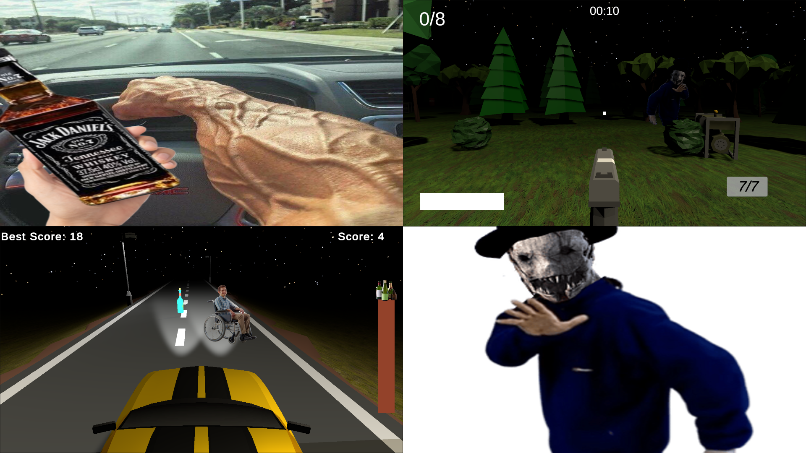

Projects
Here are some of the exciting projects I've worked on:
- Survillance Shift: A game project using Unity, link also avialable via the link below
- Personal Portfolio Website: This website you're viewing, built to showcase my skills and work.
- Esp-32 Ir Transmitter a esp-32 based system, that uses Flipper-IRDB, can send IR signals, working on IR reciver!

ResSqaure
This is my first ever game! not that good, taught me the basics of unity and c# tho!
Surveillance Shift
My first big game, took around 3 months to finish. a fully playable and finished game, launched on itch.io (Link)

Gamers Game
This game is a game full of games, the ideal is that since some people have good game ideals, and some bad, it should average out to be a good game! only packaged together on my site, separate pages on itch.io